CODING AGENTS AS PIXEL WORLD MODELS
traex/DeepSeek-V4.1-Flash · 0094
点击播放 · 原生 RGB 像素
逐轮保存的候选
回放视频、检查图与代码变化。
每份候选均可单独播放。实际图片检查记录在下方工具轨迹中。
候选 01播放与检查图
点击播放 · 原生 RGB 像素

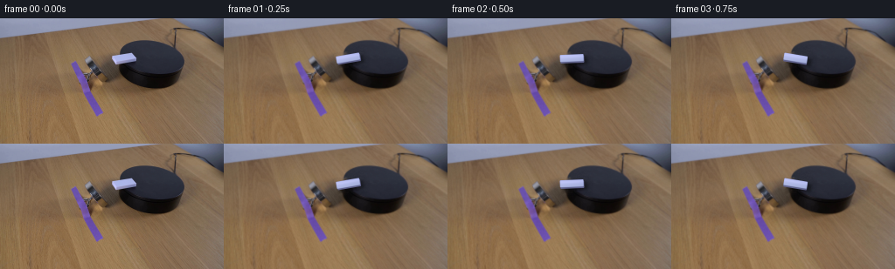
展开代码变化
--- 上一保存版本
+++ 本次保存版本
@@ -0,0 +1,163 @@
+from pathlib import Path
+
+import cv2
+import numpy as np
+from PIL import Image
+
+import artifact_io
+
+
+CASE_DIR = Path(__file__).resolve().parent
+WIDTH, HEIGHT = 256, 144
+N_FRAMES = 20
+FPS = 4
+SCALE = 4
+
+# The domino is centered near the left edge of the round platform. Its long
+# axis points up-right in the photographed frame.
+CENTER = np.array([142.2, 45.7], dtype=np.float64)
+BASE_ANGLE = np.deg2rad(-12.5)
+LENGTH = 27.2
+WIDTH_OBJ = 8.3
+THICKNESS = np.array([0.45, 1.65], dtype=np.float64)
+
+
+def _quad_mask(shape, points):
+ mask = np.zeros(shape[:2], dtype=np.uint8)
+ cv2.fillPoly(mask, [np.round(points).astype(np.int32)], 255)
+ return mask
+
+
+def clean_plate(original):
+ """Remove the photographed domino, leaving a continuous platform surface."""
+ source_quad = np.array(
+ [[127.0, 41.5], [156.8, 36.4], [159.2, 49.0], [129.0, 56.2]],
+ dtype=np.float32,
+ )
+ mask = _quad_mask(original.shape, source_quad)
+ mask = cv2.dilate(mask, np.ones((3, 3), np.uint8), iterations=1)
+
+ # Telea inpainting preserves the platform's broad tonal gradient; the
+ # faint noise added below keeps the patch from looking unnaturally flat.
+ plate = cv2.inpaint(original, mask, 5, cv2.INPAINT_TELEA)
+ plate = cv2.GaussianBlur(plate, (3, 3), 0.45)
+
+ rng = np.random.default_rng(94)
+ noise = rng.normal(0.0, 1.7, (HEIGHT, WIDTH, 1))
+ soft_mask = cv2.GaussianBlur(mask.astype(np.float32) / 255.0, (0, 0), 1.1)
+ plate = plate.astype(np.float32) + noise * soft_mask[:, :, None]
+ return np.clip(plate, 0, 255).astype(np.uint8)
+
+
+def rounded_rect_sdf(px, py, half_length, half_width, radius):
+ qx = np.abs(px) - (half_length - radius)
+ qy = np.abs(py) - (half_width - radius)
+ outside = np.hypot(np.maximum(qx, 0.0), np.maximum(qy, 0.0))
+ inside = np.minimum(np.maximum(qx, qy), 0.0)
+ return outside + inside - radius
+
+
+def render_domino(canvas, angle, scale=SCALE):
+ """Render a beveled plastic domino onto an sRGB uint8 canvas."""
+ h, w = canvas.shape[:2]
+ yy, xx = np.mgrid[0:h, 0:w]
+ px = (xx + 0.5) / scale
+ py = (yy + 0.5) / scale
+
+ direction = np.array([np.cos(angle), np.sin(angle)])
+ across = np.array([-direction[1], direction[0]])
+ dx = px - CENTER[0]
+ dy = py - CENTER[1]
+ u = dx * direction[0] + dy * direction[1]
+ v = dx * across[0] + dy * across[1]
+
+ sdf = rounded_rect_sdf(u, v, LENGTH / 2, WIDTH_OBJ / 2, 1.05)
+ top_alpha = np.clip(0.5 - sdf * scale, 0.0, 1.0)
+
+ # The small extruded body is visible along the lower and right edges.
+ su = u - THICKNESS[0] * direction[0] - THICKNESS[1] * across[0]
+ sv = v - THICKNESS[0] * direction[1] - THICKNESS[1] * across[1]
+ side_sdf = rounded_rect_sdf(su, sv, LENGTH / 2, WIDTH_OBJ / 2, 1.05)
+ side_alpha = np.clip(0.5 - side_sdf * scale, 0.0, 1.0)
+
+ # A soft, directional cast shadow makes the rotation readable on black.
+ shadow_dx = dx - 4.0
+ shadow_dy = dy - 3.1
+ shadow_u = shadow_dx * direction[0] + shadow_dy * direction[1]
+ shadow_v = shadow_dx * across[0] + shadow_dy * across[1]
+ shadow_sdf = rounded_rect_sdf(
+ shadow_u, shadow_v, LENGTH / 2 + 0.8, WIDTH_OBJ / 2 + 0.5, 1.3
+ )
+ shadow = np.clip(0.5 - shadow_sdf * scale, 0.0, 1.0)
+ shadow = cv2.GaussianBlur(shadow, (0, 0), 1.5 * scale)
+
+ out = canvas.astype(np.float32)
+ shadow_rgb = np.array([7.0, 8.0, 10.0], dtype=np.float32)
+ shadow_strength = shadow * 0.42
+ out = out * (1.0 - shadow_strength[:, :, None]) + shadow_rgb * shadow_strength[:, :, None]
+
+ side_rgb = np.array([99.0, 101.0, 143.0], dtype=np.float32)
+ side_alpha3 = side_alpha[:, :, None]
+ out = out * (1.0 - side_alpha3 * 0.96) + side_rgb * side_alpha3 * 0.96
+
+ # Plastic top: a cool white with a restrained lengthwise sheen and a
+ # darker bevel. The color cast matches the photographed material.
+ un = np.clip(u / (LENGTH / 2), -1.0, 1.0)
+ vn = np.clip(v / (WIDTH_OBJ / 2), -1.0, 1.0)
+ base = np.empty((h, w, 3), dtype=np.float32)
+ base[:, :, 0] = 177.0 + 5.0 * (-un) - 10.0 * vn
+ base[:, :, 1] = 185.0 + 4.0 * (-un) - 8.0 * vn
+ base[:, :, 2] = 232.0 + 4.0 * (-un) - 13.0 * vn
+
+ highlight = np.exp(-((vn + 0.35) / 0.28) ** 2) * (0.65 + 0.35 * np.cos(un * 1.8))
+ base += highlight[:, :, None] * np.array([8.0, 7.0, 7.0])
+ bevel = np.clip((sdf + 0.75) / 0.75, 0.0, 1.0)
+ base -= bevel[:, :, None] * np.array([35.0, 35.0, 31.0])
+
+ grain = (
+ np.sin(xx * 2.17 + yy * 1.37)
+ + 0.55 * np.sin(xx * 4.31 - yy * 3.11)
+ + 0.35 * np.cos(xx * 6.7 + yy * 4.9)
+ )
+ base += grain[:, :, None] * 0.45
+
+ top_alpha3 = top_alpha[:, :, None]
+ out = out * (1.0 - top_alpha3) + base * top_alpha3
+ return np.clip(out, 0, 255).astype(np.uint8)
+
+
+def smoothstep(x):
+ x = np.clip(x, 0.0, 1.0)
+ return x * x * (3.0 - 2.0 * x)
+
+
+def make_frames():
+ first = np.asarray(Image.open(CASE_DIR / "first_frame.png").convert("RGB"))
+ if first.shape != (HEIGHT, WIDTH, 3):
+ raise ValueError(f"Unexpected first-frame shape: {first.shape}")
+
+ plate = clean_plate(first)
+ frames = [first.copy()]
+
+ for index in range(1, N_FRAMES):
+ time_s = index / FPS
+ turn = 2.0 * np.pi * smoothstep(time_s / (N_FRAMES / FPS))
+ angle = BASE_ANGLE + turn
+
+ large = cv2.resize(
+ plate, (WIDTH * SCALE, HEIGHT * SCALE), interpolation=cv2.INTER_CUBIC
+ )
+ large = render_domino(large, angle)
+ frame = cv2.resize(large, (WIDTH, HEIGHT), interpolation=cv2.INTER_AREA)
+ frames.append(frame)
+
+ return np.stack(frames).astype(np.uint8)
+
+
+def main():
+ frames = make_frames()
+ artifact_io.save(frames, CASE_DIR)
+
+
+if __name__ == "__main__":
+ main()
候选 02播放与检查图
点击播放 · 原生 RGB 像素

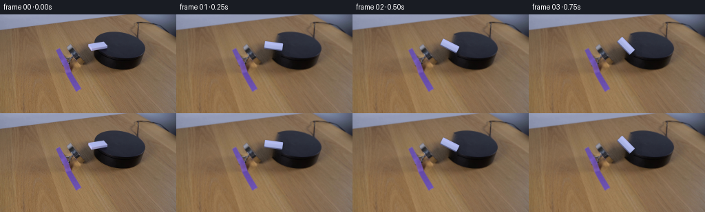
展开代码变化
--- 上一保存版本
+++ 本次保存版本
@@ -15,11 +15,11 @@
# The domino is centered near the left edge of the round platform. Its long
# axis points up-right in the photographed frame.
-CENTER = np.array([142.2, 45.7], dtype=np.float64)
-BASE_ANGLE = np.deg2rad(-12.5)
-LENGTH = 27.2
-WIDTH_OBJ = 8.3
-THICKNESS = np.array([0.45, 1.65], dtype=np.float64)
+CENTER = np.array([141.5, 45.4], dtype=np.float64)
+BASE_ANGLE = np.deg2rad(-11.3)
+LENGTH = 26.7
+WIDTH_OBJ = 9.8
+THICKNESS = 1.35
def _quad_mask(shape, points):
@@ -30,17 +30,13 @@
def clean_plate(original):
"""Remove the photographed domino, leaving a continuous platform surface."""
- source_quad = np.array(
- [[127.0, 41.5], [156.8, 36.4], [159.2, 49.0], [129.0, 56.2]],
- dtype=np.float32,
- )
- mask = _quad_mask(original.shape, source_quad)
- mask = cv2.dilate(mask, np.ones((3, 3), np.uint8), iterations=1)
+ mask = np.zeros(original.shape[:2], dtype=np.uint8)
+ cv2.circle(mask, (142, 46), 18, 255, -1)
# Telea inpainting preserves the platform's broad tonal gradient; the
# faint noise added below keeps the patch from looking unnaturally flat.
plate = cv2.inpaint(original, mask, 5, cv2.INPAINT_TELEA)
- plate = cv2.GaussianBlur(plate, (3, 3), 0.45)
+ plate = cv2.GaussianBlur(plate, (3, 3), 0.4)
rng = np.random.default_rng(94)
noise = rng.normal(0.0, 1.7, (HEIGHT, WIDTH, 1))
@@ -75,28 +71,28 @@
top_alpha = np.clip(0.5 - sdf * scale, 0.0, 1.0)
# The small extruded body is visible along the lower and right edges.
- su = u - THICKNESS[0] * direction[0] - THICKNESS[1] * across[0]
- sv = v - THICKNESS[0] * direction[1] - THICKNESS[1] * across[1]
+ su = u
+ sv = v - THICKNESS
side_sdf = rounded_rect_sdf(su, sv, LENGTH / 2, WIDTH_OBJ / 2, 1.05)
side_alpha = np.clip(0.5 - side_sdf * scale, 0.0, 1.0)
# A soft, directional cast shadow makes the rotation readable on black.
- shadow_dx = dx - 4.0
- shadow_dy = dy - 3.1
+ shadow_dx = dx - 0.8
+ shadow_dy = dy - 2.0
shadow_u = shadow_dx * direction[0] + shadow_dy * direction[1]
shadow_v = shadow_dx * across[0] + shadow_dy * across[1]
shadow_sdf = rounded_rect_sdf(
shadow_u, shadow_v, LENGTH / 2 + 0.8, WIDTH_OBJ / 2 + 0.5, 1.3
)
shadow = np.clip(0.5 - shadow_sdf * scale, 0.0, 1.0)
- shadow = cv2.GaussianBlur(shadow, (0, 0), 1.5 * scale)
+ shadow = cv2.GaussianBlur(shadow, (0, 0), 2.2 * scale)
out = canvas.astype(np.float32)
shadow_rgb = np.array([7.0, 8.0, 10.0], dtype=np.float32)
- shadow_strength = shadow * 0.42
+ shadow_strength = shadow * 0.29
out = out * (1.0 - shadow_strength[:, :, None]) + shadow_rgb * shadow_strength[:, :, None]
- side_rgb = np.array([99.0, 101.0, 143.0], dtype=np.float32)
+ side_rgb = np.array([91.0, 94.0, 132.0], dtype=np.float32)
side_alpha3 = side_alpha[:, :, None]
out = out * (1.0 - side_alpha3 * 0.96) + side_rgb * side_alpha3 * 0.96
@@ -105,9 +101,9 @@
un = np.clip(u / (LENGTH / 2), -1.0, 1.0)
vn = np.clip(v / (WIDTH_OBJ / 2), -1.0, 1.0)
base = np.empty((h, w, 3), dtype=np.float32)
- base[:, :, 0] = 177.0 + 5.0 * (-un) - 10.0 * vn
- base[:, :, 1] = 185.0 + 4.0 * (-un) - 8.0 * vn
- base[:, :, 2] = 232.0 + 4.0 * (-un) - 13.0 * vn
+ base[:, :, 0] = 172.0 + 3.0 * (-un) - 8.0 * vn
+ base[:, :, 1] = 181.0 + 3.0 * (-un) - 7.0 * vn
+ base[:, :, 2] = 230.0 + 3.0 * (-un) - 11.0 * vn
highlight = np.exp(-((vn + 0.35) / 0.28) ** 2) * (0.65 + 0.35 * np.cos(un * 1.8))
base += highlight[:, :, None] * np.array([8.0, 7.0, 7.0])
@@ -140,8 +136,7 @@
frames = [first.copy()]
for index in range(1, N_FRAMES):
- time_s = index / FPS
- turn = 2.0 * np.pi * smoothstep(time_s / (N_FRAMES / FPS))
+ turn = 2.0 * np.pi * index / (N_FRAMES - 1)
angle = BASE_ANGLE + turn
large = cv2.resize(
候选 03播放与检查图
点击播放 · 原生 RGB 像素

展开代码变化
--- 上一保存版本
+++ 本次保存版本
@@ -19,7 +19,7 @@
BASE_ANGLE = np.deg2rad(-11.3)
LENGTH = 26.7
WIDTH_OBJ = 9.8
-THICKNESS = 1.35
+THICKNESS = 0.7
def _quad_mask(shape, points):
@@ -70,7 +70,7 @@
sdf = rounded_rect_sdf(u, v, LENGTH / 2, WIDTH_OBJ / 2, 1.05)
top_alpha = np.clip(0.5 - sdf * scale, 0.0, 1.0)
- # The small extruded body is visible along the lower and right edges.
+ # The small extruded body is visible along the lower edge.
su = u
sv = v - THICKNESS
side_sdf = rounded_rect_sdf(su, sv, LENGTH / 2, WIDTH_OBJ / 2, 1.05)
@@ -92,10 +92,6 @@
shadow_strength = shadow * 0.29
out = out * (1.0 - shadow_strength[:, :, None]) + shadow_rgb * shadow_strength[:, :, None]
- side_rgb = np.array([91.0, 94.0, 132.0], dtype=np.float32)
- side_alpha3 = side_alpha[:, :, None]
- out = out * (1.0 - side_alpha3 * 0.96) + side_rgb * side_alpha3 * 0.96
-
# Plastic top: a cool white with a restrained lengthwise sheen and a
# darker bevel. The color cast matches the photographed material.
un = np.clip(u / (LENGTH / 2), -1.0, 1.0)
@@ -116,6 +112,10 @@
+ 0.35 * np.cos(xx * 6.7 + yy * 4.9)
)
base += grain[:, :, None] * 0.45
+
+ side_rgb = np.array([104.0, 107.0, 146.0], dtype=np.float32)
+ side_alpha3 = side_alpha[:, :, None]
+ out = out * (1.0 - side_alpha3 * 0.9) + side_rgb * side_alpha3 * 0.9
top_alpha3 = top_alpha[:, :, None]
out = out * (1.0 - top_alpha3) + base * top_alpha3
候选 04播放与检查图
点击播放 · 原生 RGB 像素
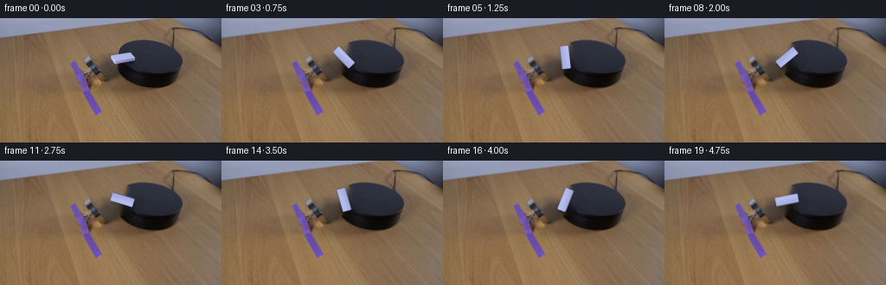
展开代码变化
--- 上一保存版本
+++ 本次保存版本
@@ -20,12 +20,6 @@
LENGTH = 26.7
WIDTH_OBJ = 9.8
THICKNESS = 0.7
-
-
-def _quad_mask(shape, points):
- mask = np.zeros(shape[:2], dtype=np.uint8)
- cv2.fillPoly(mask, [np.round(points).astype(np.int32)], 255)
- return mask
def clean_plate(original):
@@ -122,11 +116,6 @@
return np.clip(out, 0, 255).astype(np.uint8)
-def smoothstep(x):
- x = np.clip(x, 0.0, 1.0)
- return x * x * (3.0 - 2.0 * x)
-
-
def make_frames():
first = np.asarray(Image.open(CASE_DIR / "first_frame.png").convert("RGB"))
if first.shape != (HEIGHT, WIDTH, 3):
可观测工具轨迹
实际执行的命令与返回图片。
命令 1exit 0
/bin/bash -c "pwd && rg --files -g 'prompt.txt' -g 'GENERATION_RULES.md' -g 'first_frame.png' -g '"'!**/.git/**'"'"
命令 2exit 0
/bin/bash -c "ls -la && find . -maxdepth 2 -type f -printf '%p %s bytes\\n' | sort | head -200"
命令 3exit 0
/bin/bash -c "which ffmpeg ffprobe blender python3 node npm convert magick 2>/dev/null || true; python3 - <<'PY' mods=['cv2','numpy','PIL','imageio','torch','diffusers','moviepy','scipy'] for m in mods: try: mod=__import__(m) print(m, getattr(mod,'__version__','ok')) except Exception as e: print(m, 'MISSING', type(e).__name__) PY"
命令 4exit 0
/bin/bash -c 'cat prompt.txt'
命令 5exit 0
/bin/bash -c 'cat GENERATION_RULES.md'
命令 6exit 0
/bin/bash -c "sed -n '1,260p' player_template.html"
命令 7exit 0
/bin/bash -c "sed -n '1,240p' artifact_io.py"
命令 8exit 0
/bin/bash -c "python3 - <<'PY'
from PIL import Image
im=Image.open('first_frame.png')
print(im.size, im.mode)
for name,box in [('domino',(110,40,165,88)),('platform',(115,20,245,105)),('magnet',(70,35,135,100))]:
im.crop(box).resize(((box[2]-box[0])*6,(box[3]-box[1])*6), Image.Resampling.NEAREST).save('.tmp/'+name+'.png')
PY"命令 9exit 0
/bin/bash -c "python3 - <<'PY'
from PIL import Image
im=Image.open('first_frame.png')
im.resize((1024,576),Image.Resampling.NEAREST).save('.tmp/full4x.png')
PY"命令 10exit 0
/bin/bash -c "python3 - <<'PY'
from PIL import Image
im=Image.open('first_frame.png')
for name,box in [('top',(110,20,180,75)),('domino_smooth',(120,34,164,62)),('platform_smooth',(110,20,240,95))]:
c=im.crop(box)
c.resize((c.width*12,c.height*12),Image.Resampling.LANCZOS).save('.tmp/'+name+'.png')
PY"命令 11exit 0
/bin/bash -c "python3 - <<'PY'
import cv2, numpy as np
im=cv2.imread('first_frame.png')[:,:,::-1]
# white domino region only
roi=im[32:65,115:165]
gray=cv2.cvtColor(roi,cv2.COLOR_RGB2GRAY)
for t in [80,100,120,140,160,180,200]:
ys,xs=np.where(gray>t)
if len(xs): print(t,len(xs), (xs.min()+115,xs.max()+115,ys.min()+32,ys.max()+32), (xs.mean()+115,ys.mean()+32))
# PCA threshold 100
ys,xs=np.where(gray>100)
pts=np.column_stack([xs+115,ys+32]).astype(np.float32)
mean=pts.mean(0); cov=np.cov((pts-mean).T); vals,vecs=np.linalg.eigh(cov)
print('mean',mean,'eig',vals,vecs)
PY"命令 12exit 0
/bin/bash -c "python3 - <<'PY'
import cv2,numpy as np
im=cv2.imread('first_frame.png')[:,:,::-1]
# print grayscale white-ish pixels in domino bbox as ascii
for y in range(32,58):
s=''
for x in range(120,160):
r,g,b=map(int,im[y,x]); v=max(r,g,b)
if min(r,g,b)>115 and max(r,g,b)-min(r,g,b)<35: c='#'
elif v>85: c='+'
elif v>65:c='.'
else:c=' '
s+=c
print(f'{y:3d} {s}')
PY"命令 13exit 0
/bin/bash -c "python3 - <<'PY'
from PIL import Image, ImageDraw
im=Image.open('first_frame.png').crop((110,25,175,70)).resize((65*10,45*10),Image.Resampling.NEAREST)
d=ImageDraw.Draw(im)
for x in range(0,66,5):
d.line((x*10,0,x*10,450), fill=(0,255,0), width=1)
d.text((x*10+2,2),str(x+110),fill=(0,255,0))
for y in range(0,46,5):
d.line((0,y*10,650,y*10), fill=(0,255,0), width=1)
d.text((2,y*10+2),str(y+25),fill=(0,255,0))
im.save('.tmp/domino_grid.png')
PY"命令 14exit 0
/bin/bash -c "python3 - <<'PY'
from PIL import Image, ImageDraw
im=Image.open('first_frame.png').crop((120,32,166,62)).resize((46*20,30*20),Image.Resampling.NEAREST)
d=ImageDraw.Draw(im)
for x in range(0,47,2):
d.line((x*20,0,x*20,600), fill=(0,255,0), width=1)
if x%4==0:d.text((x*20+2,2),str(x+120),fill=(0,255,0))
for y in range(0,31,2):
d.line((0,y*20,920,y*20), fill=(0,255,0), width=1)
if y%4==0:d.text((2,y*20+2),str(y+32),fill=(0,255,0))
im.save('.tmp/domino_grid2.png')
PY"命令 15exit 0
/bin/bash -c "python3 - <<'PY'
import cv2,numpy as np
im=cv2.imread('first_frame.png')
g=cv2.cvtColor(im,cv2.COLOR_BGR2GRAY)
roi=g[34:57,120:165]
for t in [65,75,85,95,105,115]:
m=(roi>t).astype(np.uint8)*255
cnts,_=cv2.findContours(m,cv2.RETR_EXTERNAL,cv2.CHAIN_APPROX_SIMPLE)
print('t',t)
for c in cnts:
if cv2.contourArea(c)>5:
rect=cv2.minAreaRect(c)
print(' area',cv2.contourArea(c),'rect',rect,'box',cv2.boxPoints(rect))
PY"命令 16exit 0
/bin/bash -c "python3 - <<'PY'
from PIL import Image
im=Image.open('first_frame.png')
# maybe make 16x and bilinear no grid for visual
im.crop((110,25,175,70)).resize((1300,900),Image.Resampling.NEAREST).save('.tmp/domino_big.png')
PY"命令 17exit 0
/bin/bash -c "python3 - <<'PY'
import cv2,numpy as np
im=cv2.imread('first_frame.png')[:,:,::-1]
# sample table / black platform / domino colors
pts={'table1':(80,115),'table2':(220,125),'platform_top':(160,45),'platform_top2':(180,58),'platform_side':(205,85),'domino':(142,45),'magnet':(108,52)}
for n,(x,y) in pts.items():print(n,(x,y),im[y,x])
PY"命令 18exit 0
/bin/bash -c "python3 - <<'PY'
from PIL import Image
im=Image.open('first_frame.png')
for i,(x,y) in enumerate([(142,45),(140,46),(145,48),(150,47),(130,43),(155,45)]):
print((x,y),im.getpixel((x,y)))
# Save raw pixel matrix values around white domino as colors
import numpy as np
a=np.array(im)
for y in range(38,54,2):
print('y',y,[tuple(a[y,x]) for x in range(126,158,4)])
PY"命令 19exit 0
/bin/bash -c "python3 - <<'PY'
import cv2,numpy as np
im=cv2.imread('first_frame.png')[:,:,::-1]
# white mask with color and intensity
for condname,m in [
('bluewhite',(im[:,:,2]>150)&(im[:,:,1]>140)&(im[:,:,0]>100)),
('lavender',(im[:,:,2]>120)&(im[:,:,1]>120)&(im[:,:,0]>90)),
('bright',im.mean(2)>130)
]:
m=m.astype(np.uint8)
m[:25]=0;m[65:]=0;m[:,:115]=0;m[:,165:]=0
cnts,_=cv2.findContours(m,cv2.RETR_EXTERNAL,cv2.CHAIN_APPROX_SIMPLE)
print(condname)
for c in cnts:
if cv2.contourArea(c)>3:
rect=cv2.minAreaRect(c)
print(cv2.contourArea(c), rect, cv2.boxPoints(rect))
PY"命令 20exit 0
/bin/bash -c "python3 - <<'PY'
import cv2,numpy as np
im=cv2.imread('first_frame.png')[:,:,::-1]
g=im.mean(2)
# Hough lines in domino
roi=(g[34:56,123:160]).astype(np.uint8)
edges=cv2.Canny(roi,15,50)
lines=cv2.HoughLinesP(edges,1,np.pi/180,threshold=8,minLineLength=8,maxLineGap=4)
print(lines)
PY"命令 21exit 0
/bin/bash -c "python3 - <<'PY'
import cv2, numpy as np
im=cv2.imread('first_frame.png')[:,:,::-1]
# Save masks
mask=((im[:,:,2]>145)&(im[:,:,1]>135)&(im[:,:,0]>90)).astype(np.uint8)*255
mask[:30]=0;mask[65:]=0;mask[:,:115]=0;mask[:,170:]=0
cv2.imwrite('.tmp/domino_mask.png',mask)
PY"命令 22exit 0
/bin/bash -c "python3 - <<'PY'
import cv2, numpy as np
from PIL import Image
im=cv2.imread('first_frame.png')
# full swept disk plus shadow area
mask=np.zeros(im.shape[:2],np.uint8)
cv2.circle(mask,(143,45),17,255,-1)
# protect outside platform? no
clean=cv2.inpaint(im,mask,5,cv2.INPAINT_TELEA)
cv2.imwrite('.tmp/clean_telea.png',clean)
clean2=cv2.inpaint(im,mask,5,cv2.INPAINT_NS)
cv2.imwrite('.tmp/clean_ns.png',clean2)
# Side by side zoom
crop=np.hstack([im[25:70,120:170],clean[25:70,120:170],clean2[25:70,120:170]])
cv2.imwrite('.tmp/clean_compare.png',cv2.resize(crop,None,fx=8,fy=8,interpolation=cv2.INTER_NEAREST))
PY"命令 23exit 0
/bin/bash -c "python3 - <<'PY'
from PIL import Image
import numpy as np
im=np.array(Image.open('first_frame.png'))
# print color around perimeter and inspect platform top via hsv
import cv2
hsv=cv2.cvtColor(im,cv2.COLOR_RGB2HSV)
for y in [25,30,35,40,45,50,55,60,65,70,75,80,85,90]:
vals=[]
for x in [120,125,130,135,140,145,150,155,160,165,170,175,180,185,190,200,220]:
vals.append(tuple(im[y,x]))
print(y, vals)
PY"命令 24exit 0
/bin/bash -c "python3 - <<'PY'
from PIL import Image
im=Image.open('.tmp/clean_telea.png')
im.crop((115,25,180,75)).resize((65*12,50*12),Image.Resampling.NEAREST).save('.tmp/clean_big.png')
PY"命令 25exit 0
/bin/bash -c "python3 - <<'PY'
import cv2,numpy as np
im=cv2.imread('first_frame.png')
# inspect shadows around domino with grayscale diff relative to nearby top
roi=im[25:70,115:180]
# top values
for y in range(35,60):
vals=[]
for x in range(120,165):
b,g,r=map(int,im[y,x]);
if max(b,g,r)<65: c='#'
elif max(b,g,r)<80:c='x'
elif max(b,g,r)<100:c='+'
elif max(b,g,r)<125:c='.'
else:c=' '
vals.append(c)
print(f'{y:3d} '+''.join(vals))
PY"命令 26exit 0
/bin/bash -c "python3 - <<'PY'
import cv2,numpy as np
im=cv2.imread('first_frame.png')
roi=im[30:55,120:170].astype(np.float32)
# print grayscale for 35 rows
g=cv2.cvtColor(roi.astype(np.uint8),cv2.COLOR_BGR2GRAY)
np.set_printoptions(linewidth=200)
print(g[:,0:50].astype(int))
PY"命令 27exit 0
/bin/bash -c "python3 - <<'PY'
import cv2,numpy as np
im=cv2.imread('first_frame.png')
g=cv2.cvtColor(im,cv2.COLOR_BGR2GRAY)
for y in range(30,56):
print(f'{y}: '+' '.join(f'{g[y,x]:3d}' for x in range(120,170)))
PY"命令 28exit 0
/bin/bash -c "python3 - <<'PY'
import cv2,numpy as np
im=cv2.imread('first_frame.png')[:,:,::-1]
# fit platform top region 155:230, 30:60. Estimate per channel smooth color and gradient
# print edges positions by intensity at rows
for y in [30,35,40,45,50,55,60,65,70,75,80]:
g=im[y].mean(1)
# show ranges under 70
print(y, [(x,int(g[x])) for x in range(105,240) if g[x]<75][::5])
PY"命令 29exit 0
/bin/bash -c "python3 - <<'PY'
import cv2,numpy as np
im=cv2.imread('first_frame.png')[:,:,::-1].astype(float)
# use linear gradient fit to top area x=160..225,y=28..75 excluding shadows
Y,X=np.mgrid[25:80,160:230]
mask=~(((X-145)**2+(Y-45)**2)<25**2)
for c in range(3):
z=im[Y[mask],X[mask],c]
A=np.c_[X[mask],Y[mask],np.ones(len(z))]
coef=np.linalg.lstsq(A,z,rcond=None)[0]
print(c,coef)
PY"命令 30exit 0
/bin/bash -c "python3 - <<'PY'
import cv2,numpy as np
im=cv2.imread('first_frame.png')[:,:,::-1].astype(float)
# sample platform top residual from linear fit (x 160-230 y 25-80) and determine noise
coefs=np.array([[1.91363329,-0.59680593,-273.4890927],[1.47061687,-0.63643278,-192.84321194],[0.87622089,-0.77450362,-73.34175564]])
y,x=np.mgrid[25:80,160:230]
pred=np.stack([c[0]*x+c[1]*y+c[2] for c in coefs],-1)
res=im[25:80,160:230]-pred
print('mean',res.reshape(-1,3).mean(0),'std',res.reshape(-1,3).std(0),'quantiles',np.quantile(res.reshape(-1,3),[.01,.1,.5,.9,.99],axis=0))
PY"命令 31exit 0
/bin/bash -c "python3 - <<'PY'
import cv2,numpy as np
im=cv2.imread('first_frame.png')
g=cv2.cvtColor(im,cv2.COLOR_BGR2GRAY).astype(float)
for y in range(22,80):
vals=g[y,105:180]
# scan for crossing below 70 after bright table
xs=[]
for x in range(110,170):
if g[y,x]<75 and g[y,x-1]>=75: xs.append(x)
print(y,xs[:5], 'min',int(vals.min()))
PY"命令 32exit 0
/bin/bash -c "python3 - <<'PY'
import cv2,numpy as np
im=cv2.imread('first_frame.png')[:,:,::-1].astype(float)
# fit top plane in x=160..230 y=28..75; stats
Y,X=np.mgrid[28:75,160:230]
z=im[Y,X]
# per-channel polynomial x,y,x*y,x2,y2
A=np.stack([np.ones_like(X),X,Y,X*Y,X*X,Y*Y],-1).reshape(-1,6)
for c in range(3):
coef=np.linalg.lstsq(A,z[:,:,c].reshape(-1),rcond=None)[0]
pred=(A@coef).reshape(Y.shape)
print(c,coef,'std',np.std(z[:,:,c]-pred),'mean',np.mean(z[:,:,c]-pred))
PY"命令 33exit 0
/bin/bash -c "python3 - <<'PY'
import cv2,numpy as np
im=cv2.imread('first_frame.png')[:,:,::-1].astype(float)
Y,X=np.mgrid[30:70,155:235]
z=im[Y,X]
# Polynomial but exclude suspicious pixels based on intensity >35 and <75? Try bilateral/smooth
# calculate mask based on difference from median filtered version
med=cv2.medianBlur(z.astype(np.uint8),5).astype(float)
res=z-med
mask=(np.abs(res).max(2)<15)&(z.mean(2)>25)
print('mask',mask.sum(),mask.size)
A=np.stack([np.ones_like(X),X,Y,X*Y,X*X,Y*Y],-1).reshape(-1,6)
for c in range(3):
coef=np.linalg.lstsq(A[mask.reshape(-1)],z[:,:,c].reshape(-1)[mask.reshape(-1)],rcond=None)[0]
pred=(A@coef).reshape(Y.shape)
r=z[:,:,c]-pred
print(c,coef,'std',np.std(r[mask]),'mean',np.mean(r[mask]))
PY"命令 34exit 0
/bin/bash -c "python3 - <<'PY'
import cv2,numpy as np
im=cv2.imread('first_frame.png')[:,:,::-1].astype(float)
Y,X=np.mgrid[30:70,155:235]
z=im[Y,X]
# try bilinear interpolation x-direction from neighboring clean columns per row (right side mostly clean)
# use linear per channel / y over x=165..230 but avoid disk radius 18 around 143,45
mask=((X-143)**2+(Y-45)**2>18**2)&(X>=155)
for c in range(3):
A=np.c_[X[mask],Y[mask],np.ones(mask.sum())]
coef=np.linalg.lstsq(A,z[:,:,c][mask],rcond=None)[0]
pred=coef[0]*X+coef[1]*Y+coef[2]
r=z[:,:,c]-pred
print(c,coef,'std',np.std(r[mask]),'range',np.quantile(r[mask],[0,.05,.5,.95,1]))
PY"命令 35exit 0
/bin/bash -c "python3 - <<'PY'
import cv2,numpy as np
im=cv2.imread('first_frame.png')[:,:,::-1]
g=cv2.cvtColor(im,cv2.COLOR_RGB2GRAY)
# candidate black top: low gray and low-ish chroma? region
m=np.zeros(g.shape,np.uint8);m[20:80,120:250]=1
cand=((g<70)&(m>0)).astype(np.uint8)*255
# restrict likely platform x>140 y<75, remove magnet x<140
cand[:,:135]=0;cand[75:]=0
cv2.imwrite('.tmp/platform_mask.png',cand)
cnts,_=cv2.findContours(cand,cv2.RETR_EXTERNAL,cv2.CHAIN_APPROX_NONE)
print([(cv2.contourArea(c),c.shape) for c in cnts])
for c in cnts:
if cv2.contourArea(c)>100:
e=cv2.fitEllipse(c)
print('ellipse',e)
out=im.copy();cv2.ellipse(out,e,(0,255,0),1);cv2.imwrite('.tmp/ellipse.png',out)
PY"命令 36exit 0
/bin/bash -c "python3 - <<'PY'
import cv2,numpy as np
im=cv2.imread('first_frame.png')
g=cv2.cvtColor(im,cv2.COLOR_BGR2GRAY)
# manually sample color stats of platform right region x160..225 y25..65
for box in [(160,25,225,35),(160,35,225,50),(160,50,225,60),(160,60,225,70),(220,40,240,70),(190,25,235,40)]:
x0,y0,x1,y1=box
z=im[y0:y1,x0:x1].reshape(-1,3)
print(box, 'mean',z.mean(0), 'std',z.std(0), 'med',np.median(z,0))
PY"命令 37exit 0
/bin/bash -c 'python3 generate.py'
命令 38exit 0
/bin/bash -c "python3 - <<'PY'
from PIL import Image,ImageDraw
import numpy as np
ims=[Image.open(f'frames/{i:02d}.png').crop((115,25,170,70)).resize((330,270),Image.Resampling.NEAREST) for i in range(20)]
out=Image.new('RGB',(330*5,290*4),(20,20,20));d=ImageDraw.Draw(out)
for i,im in enumerate(ims):
x=(i%5)*330;y=(i//5)*290
out.paste(im,(x,y+20));d.text((x+4,y+4),f'f{i:02d}',fill='white')
out.save('.tmp/crops20.png')
PY"命令 39exit 0
/bin/bash -c "python3 generate.py && python3 - <<'PY'
from PIL import Image,ImageDraw
ims=[Image.open(f'frames/{i:02d}.png').crop((115,25,170,70)).resize((330,270),Image.Resampling.NEAREST) for i in range(20)]
out=Image.new('RGB',(330*5,290*4),(20,20,20));d=ImageDraw.Draw(out)
for i,im in enumerate(ims):
x=(i%5)*330;y=(i//5)*290
out.paste(im,(x,y+20));d.text((x+4,y+4),f'f{i:02d}',fill='white')
out.save('.tmp/crops20b.png')
PY"命令 40exit 0
/bin/bash -c "python3 - <<'PY'
from PIL import Image
import numpy as np
for i in [1,2,3,4,5,10,15,19]:
im=np.array(Image.open(f'frames/{i:02d}.png'))
print(i, im[45,141], im[40,141], im[50,141])
PY"命令 41exit 0
/bin/bash -c "python3 - <<'PY'
from PIL import Image
import numpy as np
im=np.array(Image.open('first_frame.png'))
# derive polygon around domino with white mask and print its hull
import cv2
m=((im[:,:,2]>135)&(im[:,:,1]>130)&(im[:,:,0]>80)).astype(np.uint8)
m[:32]=0;m[60:]=0;m[:,:120]=0;m[:,166:]=0
cnts,_=cv2.findContours(m,cv2.RETR_EXTERNAL,cv2.CHAIN_APPROX_SIMPLE)
c=max(cnts,key=cv2.contourArea)
print(cv2.contourArea(c),cv2.convexHull(c))
PY"命令 42exit 0
/bin/bash -c "python3 - <<'PY'
from PIL import Image
import numpy as np
im=np.array(Image.open('first_frame.png'))
# find quad for source footprint using edge values at corners; visualize source quad overlay
from PIL import ImageDraw
q=[(127,42),(155,37),(159,48),(131,54)]
out=Image.open('first_frame.png').resize((1024,576),Image.Resampling.NEAREST)
d=ImageDraw.Draw(out);d.polygon([(x*4,y*4) for x,y in q],outline=(0,255,0),width=2)
out.save('.tmp/source_quad.png')
PY"命令 43exit 0
/bin/bash -c "python3 - <<'PY'
from PIL import Image
import numpy as np
im=np.array(Image.open('first_frame.png'))
# sample local median color in annulus around center radius 19-25
Y,X=np.mgrid[:144,:256];r=np.hypot(X-142,Y-46)
z=im[(r>19)&(r<24)&(X>125)&(X<160)&(Y>28)&(Y<64)]
print('annulus',len(z),z.mean(0),np.median(z,0),z.std(0))
# only platform-like x>150
z=im[(r>19)&(r<24)&(X>150)&(X<170)&(Y>28)&(Y<64)]
print('right annulus',len(z),z.mean(0),np.median(z,0),z.std(0))
PY"命令 44exit 0
/bin/bash -c "python3 - <<'PY'
from PIL import Image
import numpy as np
im=np.array(Image.open('first_frame.png'))
# Print RGB at grid around expected disc using 5 step, with threshold symbols
for y in range(25,66,2):
s=''
for x in range(123,164,2):
r,g,b=map(int,im[y,x]);
if b>140 and g>130: c='W'
elif max(r,g,b)<38:c='#'
elif max(r,g,b)<58:c='x'
elif max(r,g,b)<80:c='+'
elif max(r,g,b)<110:c='.'
else:c=' '
s+=c
print(f'{y:3d} {s}')
PY"命令 45exit 0
/bin/bash -c "python3 - <<'PY'
from PIL import Image
im=Image.open('.tmp/clean_telea.png')
# compare original clean zoom
im.crop((120,30,165,62)).resize((900,640),Image.Resampling.NEAREST).save('.tmp/clean_crop2.png')
PY"命令 46exit 0
/bin/bash -c "python3 - <<'PY'
from PIL import Image
import numpy as np
im=np.array(Image.open('first_frame.png'))
# print RGB means over 3x3 at selected platform spots
for y in range(28,64,4):
print(y, [tuple(np.median(im[max(0,y-1):y+2,x-1:x+2].reshape(-1,3),0).astype(int)) for x in range(125,166,4)])
PY"命令 47exit 0
/bin/bash -c "python3 - <<'PY'
from PIL import Image
import numpy as np
for i in [1,2,3,4,5,6,8,10,12,15,19]:
a=np.array(Image.open(f'frames/{i:02d}.png'))
# non-whiteness in center? print pixel at center and corners
print(i,'c',a[45,141], 'r',a[45,160], 'l',a[45,124], 'u',a[35,141], 'd',a[55,141])
PY"命令 48exit 0
/bin/bash -c "python3 - <<'PY'
from PIL import Image
import numpy as np
im=np.array(Image.open('frames/15.png'))
Image.fromarray(im).resize((1024,576),Image.Resampling.NEAREST).save('.tmp/f15_4x.png')
PY"命令 49exit 0
/bin/bash -c "python3 - <<'PY'
from generate import clean_plate
from PIL import Image
import numpy as np
im=np.array(Image.open('first_frame.png'))
p=clean_plate(im)
Image.fromarray(p).crop((118,28,166,68)).resize((960,800),Image.Resampling.NEAREST).save('.tmp/plate_crop.png')
# print rows at frame 15 around bar
f=np.array(Image.open('frames/15.png'))
for y in range(48,58): print(y,[tuple(f[y,x]) for x in range(132,154)])
PY"命令 50exit 0
/bin/bash -c "python3 - <<'PY'
from PIL import Image
import numpy as np
im=np.array(Image.open('.tmp/clean_telea.png'))
# sample row 50 x 130..160
for y in [40,45,50,55]:
print('y',y,[(x,tuple(im[y,x])) for x in range(130,165,5)])
PY"命令 51exit 0
/bin/bash -c "ls -lh | sort -k9 && find frames -maxdepth 1 -type f | wc -l && python3 - <<'PY'
import numpy as np
from PIL import Image
f=np.load('pixels.npz')['pixels']
print(f.shape,f.dtype)
a=np.asarray(Image.open('first_frame.png'))
g=np.asarray(Image.open('frames/00.png'))
print('first exact:',np.array_equal(a,g),'maxdiff',np.abs(a.astype(int)-g.astype(int)).max())
PY"命令 52exit 0
/bin/bash -c "python3 - <<'PY'
from PIL import Image
im=Image.open('.tmp/clean_telea.png')
# create side-by-side platform area with source and clean zoom
c=Image.open('first_frame.png').crop((105,20,180,80)).resize((600,480),Image.Resampling.NEAREST)
d=im.crop((105,20,180,80)).resize((600,480),Image.Resampling.NEAREST)
out=Image.new('RGB',(1200,480));out.paste(c,(0,0));out.paste(d,(600,0));out.save('.tmp/plate_compare.png')
PY"命令 53exit 0
/bin/bash -c "python3 generate.py && python3 - <<'PY'
from PIL import Image,ImageDraw
ims=[Image.open(f'frames/{i:02d}.png').crop((115,25,170,70)).resize((330,270),Image.Resampling.NEAREST) for i in range(20)]
out=Image.new('RGB',(330*5,290*4),(20,20,20));d=ImageDraw.Draw(out)
for i,im in enumerate(ims):
x=(i%5)*330;y=(i//5)*290
out.paste(im,(x,y+20));d.text((x+4,y+4),f'f{i:02d}',fill='white')
out.save('.tmp/crops20c.png')
PY"命令 54exit 0
/bin/bash -c "python3 - <<'PY'
import cv2,numpy as np
from PIL import Image
for i in [0,1,2,3,4,5,8,10,12,15,19]:
im=np.array(Image.open(f'frames/{i:02d}.png'))
# count white-ish pixels in crop; centroid
c=im[30:62,120:166]
m=(c[:,:,2]>125)&(c[:,:,1]>120)&(c[:,:,0]>90)
ys,xs=np.where(m)
print(i,'n',len(xs),'bbox', (xs.min()+120,xs.max()+120,ys.min()+30,ys.max()+30) if len(xs) else None,'centroid',(xs.mean()+120,ys.mean()+30) if len(xs) else None)
PY"命令 55exit 0
/bin/bash -c "python3 - <<'PY'
from PIL import Image
import numpy as np
f=np.array(Image.open('frames/19.png'))
for y in range(38,54):
s=''
for x in range(125,159):
r,g,b=map(int,f[y,x]);
if b>170 and g>160: c='#'
elif b>125 and g>120: c='+'
elif max(r,g,b)<60:c='.'
elif max(r,g,b)<100:c=' '
else:c='o'
s+=c
print(f'{y:2d} {s}')
PY"命令 56exit 0
/bin/bash -c "python3 - <<'PY'
import numpy as np, json
from PIL import Image
from pathlib import Path
p=Path('.')
frames=sorted((p/'frames').glob('*.png'))
arr=np.stack([np.asarray(Image.open(x).convert('RGB')) for x in frames])
first=np.asarray(Image.open('first_frame.png').convert('RGB'))
pixels=np.load('pixels.npz')['pixels']
html=(p/'index.html').read_text()
print('frames',len(frames),'shape',arr.shape,'dtype',arr.dtype)
print('frame0 exact',np.array_equal(arr[0],first))
print('pixels shape',pixels.shape,'pixel roundtrip',np.array_equal(pixels.transpose(2,0,1)[:,:,:,None][:,:,:,0], (arr[:,:, :, 0].astype(np.uint32)<<16 | arr[:,:, :, 1].astype(np.uint32)<<8 | arr[:,:, :, 2]).transpose(1,2,0)))
print('index html bytes',len(html),'has payload', '__DATA__' not in html)
print('unique colors per frame',[len(np.unique(x.reshape(-1,3),axis=0)) for x in arr])
PY"命令 57exit 0
/bin/bash -c "python3 - <<'PY'
import numpy as np
from PIL import Image
arr=np.stack([np.asarray(Image.open(f'frames/{i:02d}.png').convert('RGB')) for i in range(20)])
pixels=np.load('pixels.npz')['pixels']
packed=(arr[:,:,:,0].astype(np.uint32)<<16)|(arr[:,:,:,1].astype(np.uint32)<<8)|arr[:,:,:,2].astype(np.uint32)
print('npz roundtrip',np.array_equal(pixels,packed.transpose(1,2,0)))
PY"命令 58exit 0
/bin/bash -c 'git status --short 2>/dev/null || true; ls -lh frames/00.png frames/19.png index.html inspection.png pixels.npz'
命令 59exit 0
/bin/bash -c "python3 - <<'PY'
import json,re
from pathlib import Path
html=Path('index.html').read_text()
m=re.search(r'const DATA=(\\{.*?\\}),W=',html)
print('embedded data parse',bool(m))
if m:
d=json.loads(m.group(1)); print({k:d[k] for k in ['id','width','height','frames','fps','audio']},'deltas',len(d['deltas']))
print('generate compile ok')
PY
python3 -m py_compile generate.py"命令 60exit 0
/bin/bash -c "python3 - <<'PY'
import numpy as np
from PIL import Image
arr=np.stack([np.asarray(Image.open(f'frames/{i:02d}.png').convert('RGB')) for i in range(20)]).astype(np.int16)
d=np.abs(np.diff(arr,axis=0))
print('mean abs frame delta',d.mean(),'p95',np.percentile(d,95),'max',d.max())
# ensure changes are confined to domino region mostly
mask=np.zeros(arr.shape[1:3],bool);mask[25:70,115:170]=1
print('mean delta outside region',d[:,~mask].mean(),'inside',d[:,mask].mean())
PY"命令 61exit 0
/bin/bash -c "sed -n '1,260p' generate.py"
命令 62exit 0
/bin/bash -c "python3 generate.py && python3 - <<'PY'
import json,re
from pathlib import Path
import numpy as np
from PIL import Image
arr=np.stack([np.asarray(Image.open(f'frames/{i:02d}.png').convert('RGB')) for i in range(20)])
first=np.asarray(Image.open('first_frame.png').convert('RGB'))
packed=(arr[:,:,:,0].astype(np.uint32)<<16)|(arr[:,:,:,1].astype(np.uint32)<<8)|arr[:,:,:,2].astype(np.uint32)
npz=np.load('pixels.npz')['pixels']
html=Path('index.html').read_text(); m=re.search(r'const DATA=(\\{.*?\\}),W=',html); data=json.loads(m.group(1))
assert arr.shape==(20,144,256,3) and arr.dtype==np.uint8
assert np.array_equal(arr[0],first)
assert np.array_equal(npz,packed.transpose(1,2,0))
assert (data['frames'],data['width'],data['height'],data['fps'])==(20,256,144,4)
print('PASS: 20 frames, 256x144, 4 fps; frame 0 exact; pixels.npz and index.html payload verified')
PY"命令 63exit 0
/bin/bash -c 'ls -lh generate.py frames/00.png frames/19.png index.html inspection.png pixels.npz'
视觉工具实际返回图片 1

视觉工具实际返回图片 2
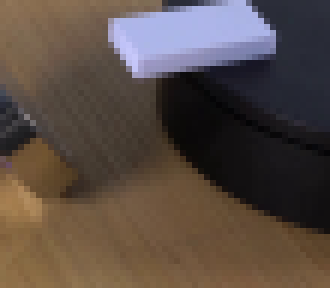
视觉工具实际返回图片 3
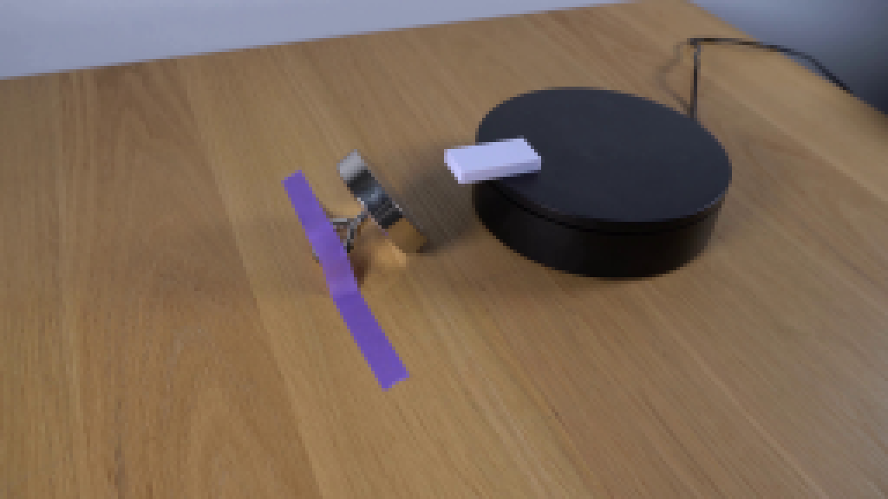
视觉工具实际返回图片 4
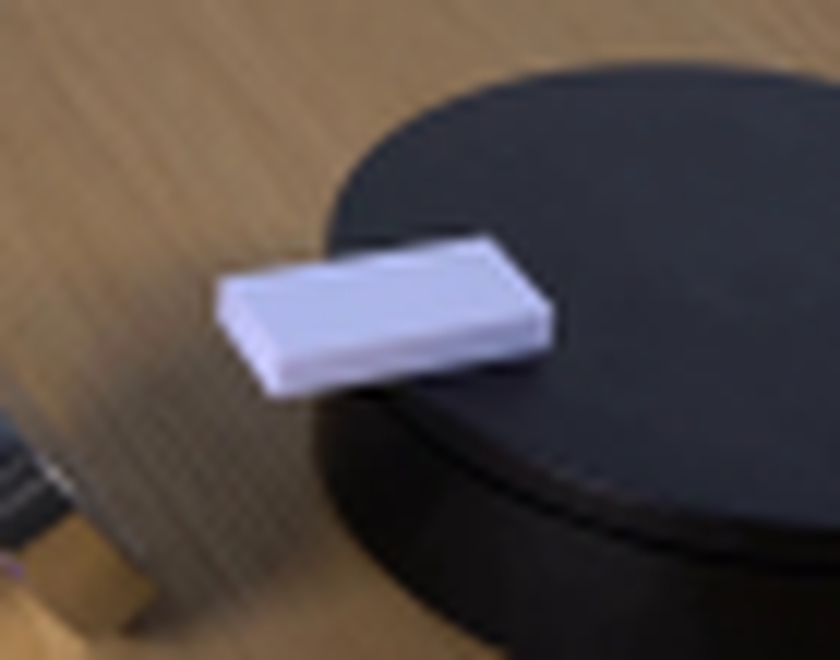
视觉工具实际返回图片 5
视觉工具实际返回图片 6
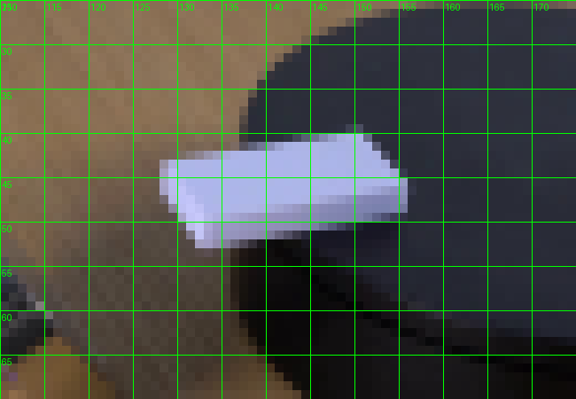
视觉工具实际返回图片 7
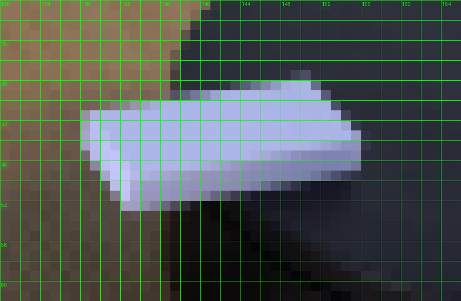
视觉工具实际返回图片 8
视觉工具实际返回图片 9
视觉工具实际返回图片 10
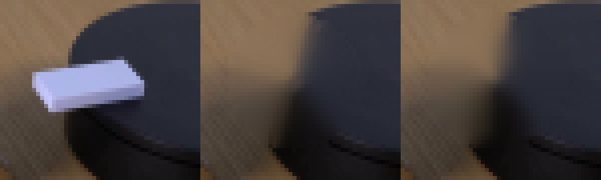
视觉工具实际返回图片 11
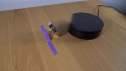
视觉工具实际返回图片 12
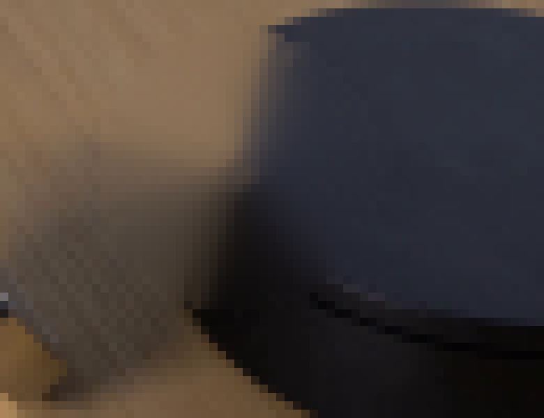
视觉工具实际返回图片 13
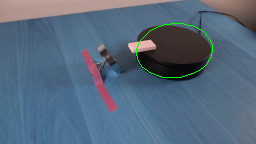
视觉工具实际返回图片 14
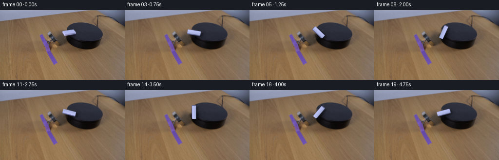
视觉工具实际返回图片 15
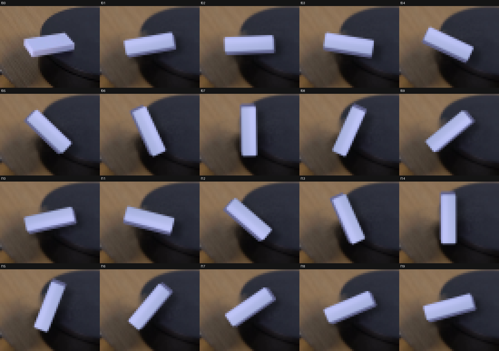
视觉工具实际返回图片 16
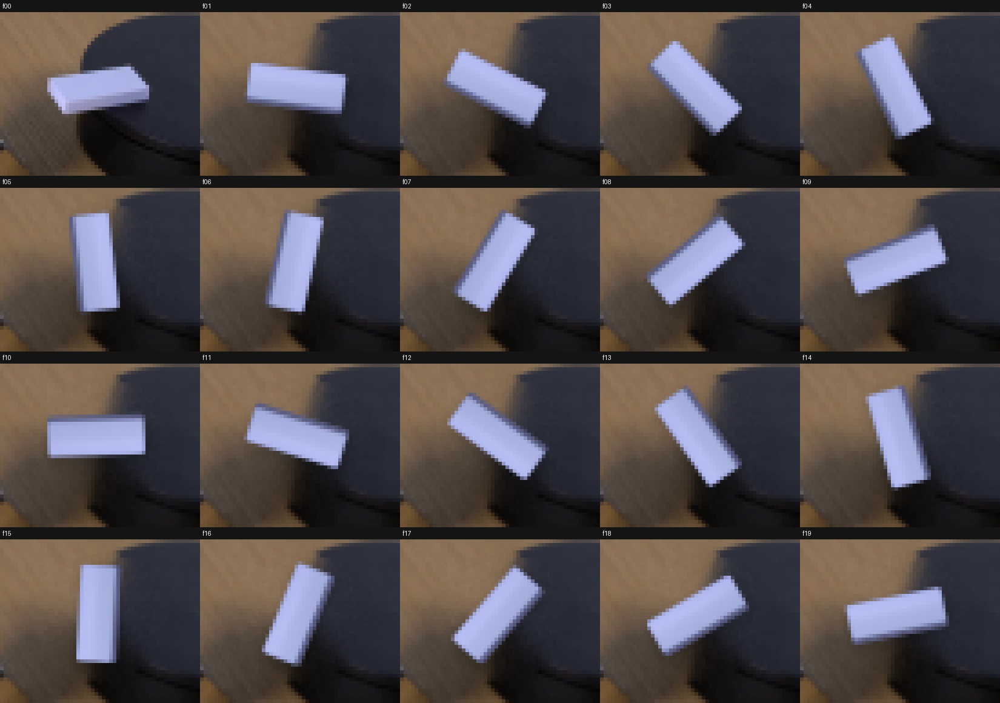
视觉工具实际返回图片 17
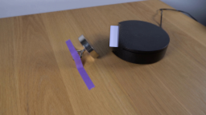
视觉工具实际返回图片 18
视觉工具实际返回图片 19
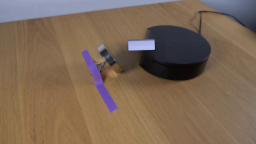
视觉工具实际返回图片 20
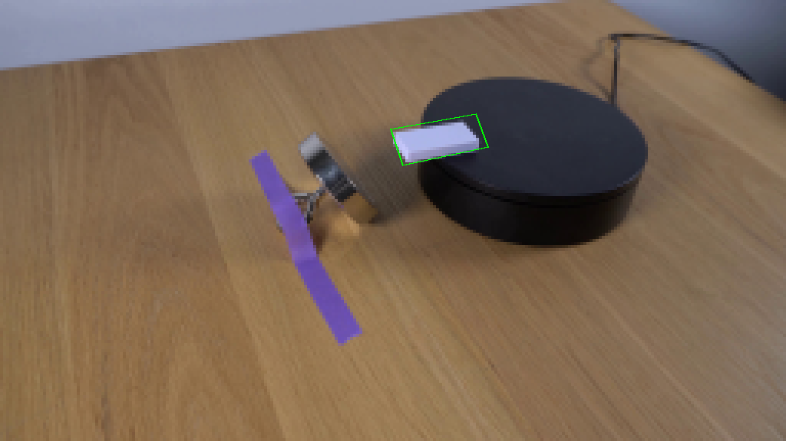
视觉工具实际返回图片 21
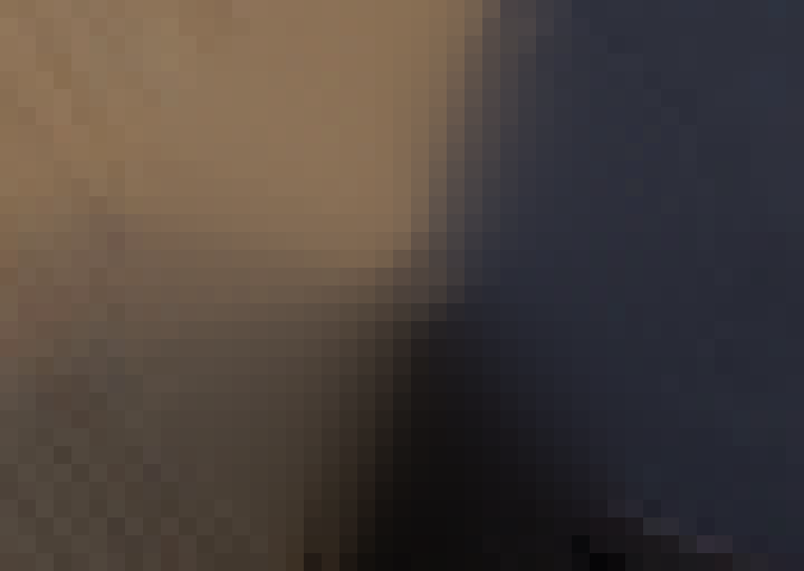
视觉工具实际返回图片 22
视觉工具实际返回图片 23
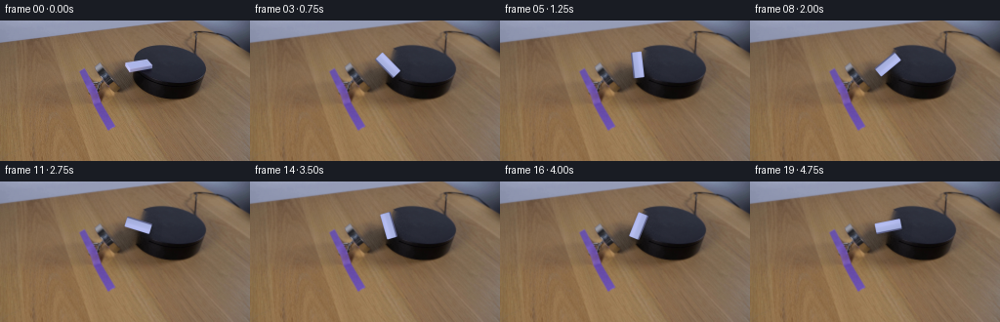
视觉工具实际返回图片 24
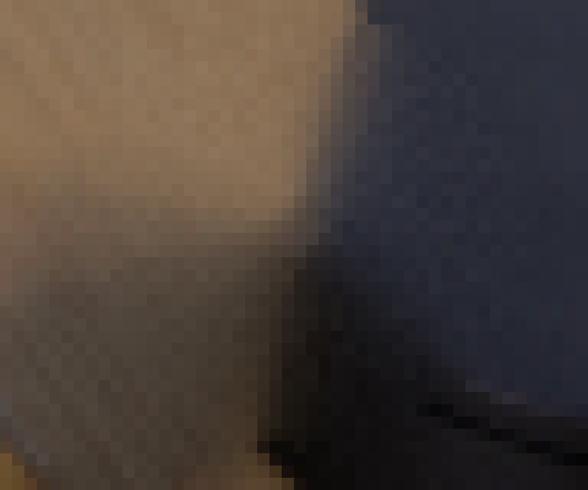
视觉工具实际返回图片 25
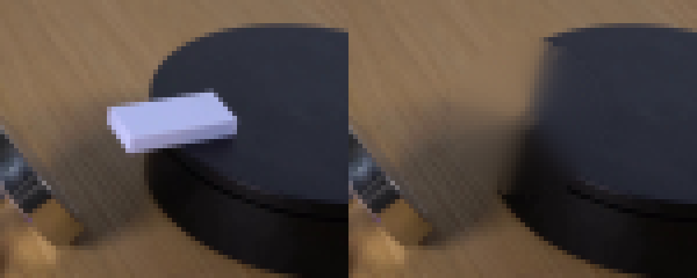
视觉工具实际返回图片 26
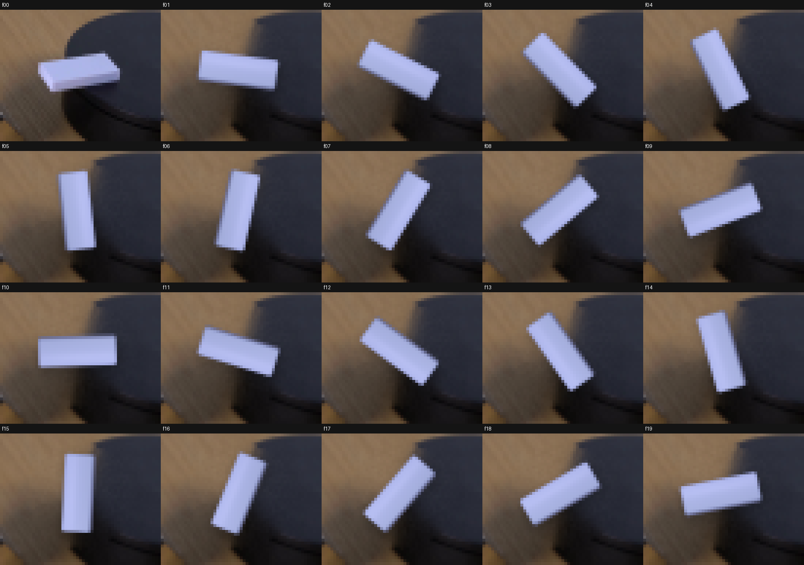
视觉工具实际返回图片 27

视觉工具实际返回图片 28
保存候选 4 份；完成命令 63 次；可验证图片返回 28 张。原始 API 响应与完整日志保留在本地。